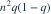
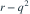

n 个球独立等概率投入 n 个盒子，空盒数为 K， 。设
。设  、
、 。
。 为？
为？
。设 、。 为？- A
- B
- C
- D

我已思考，展开答案与解析
正确答案：A
- 写 K 为 n 个空盒指示量的和。单个方差是 ，两个不同盒同时空的概率是 r，故协方差为

。 - 方差展开含 n 项单盒方差和 项有序协方差，即得答案。
易错提醒各盒空不空并不独立，漏掉协方差项会造成错误。
JYSG · 432精选 · 册内复旦大学432·2024年·二；方差拆解；PDF第40页（印刷页38）
原题知识点延伸